library(tidyverse)
#> ── Attaching core tidyverse packages ───────────────────── tidyverse 2.0.0 ──
#> ✔ dplyr 1.2.1.9000 ✔ readr 2.2.0
#> ✔ forcats 1.0.1 ✔ stringr 1.6.0
#> ✔ ggplot2 4.0.3 ✔ tibble 3.3.1
#> ✔ lubridate 1.9.5 ✔ tidyr 1.3.2
#> ✔ purrr 1.2.2
#> ── Conflicts ─────────────────────────────────────── tidyverse_conflicts() ──
#> ✖ dplyr::filter() masks stats::filter()
#> ✖ dplyr::lag() masks stats::lag()
#> ℹ Use the conflicted package (<http://conflicted.r-lib.org/>) to force all conflicts to become errors1 Visualisation de données
1.1 Introduction
« Le graphique simple a apporté plus d’informations à l’esprit de l’analyste de données que tout autre dispositif. » — John Tukey
R a plusieurs systèmes pour faire des graphiques, mais ggplot2 est l’un des plus élégants et des plus polyvalents. ggplot2 implémente la grammaire des graphiques, un système cohérent pour décrire et construire des graphiques. Avec ggplot2, vous pouvez faire plus et plus vite en apprenant un système et en l’appliquant dans de nombreux endroits.
Ce chapitre vous apprendra à visualiser vos données à l’aide de ggplot2. Nous commencerons par créer un simple nuage de points et nous l’utiliserons pour introduire les mappages esthétiques et les objets géométriques – les éléments fondamentaux de ggplot2. Nous vous guiderons ensuite à travers la visualisation des distributions de variables uniques ainsi que la visualisation des relations entre deux variables ou plus. Nous terminerons par l’export de vos graphiques et des conseils de dépannage.
1.1.1 Prérequis
Ce chapitre se concentre sur ggplot2, l’un des packages principaux du tidyverse. Pour accéder aux jeux de données, aux pages d’aide et aux fonctions utilisées dans ce chapitre, chargez le tidyverse en exécutant :
Cette seule ligne de code charge le cœur du tidyverse ; les packages que vous utiliserez dans presque chaque analyse de données. Il vous dit également quelles fonctions du tidyverse entrent en conflit avec les fonctions de R base (ou d’autres packages que vous pourriez avoir chargés)1.
Si vous exécutez ce code et recevez le message d’erreur there is no package called 'tidyverse', vous devez d’abord l’installer, puis exécuter library() à nouveau.
install.packages("tidyverse")
library(tidyverse)Vous n’avez besoin d’installer un package qu’une seule fois, mais vous devez le charger chaque fois que vous démarrez une nouvelle session.
En plus de tidyverse, nous utiliserons également le package palmerpenguins, qui inclut le jeu de données penguins contenant les mesures du corps des manchots sur trois îles de l’archipel de Palmer, et le package ggthemes, qui offre une palette de couleurs sûre pour les daltoniens.
library(palmerpenguins)
#>
#> Attaching package: 'palmerpenguins'
#> The following objects are masked from 'package:datasets':
#>
#> penguins, penguins_raw
library(ggthemes)1.2 Premiers pas
Les manchots avec des nageoires plus longues pèsent-ils plus ou moins que les manchots avec des nageoires plus courtes ? Vous avez probablement déjà une réponse, mais essayez de rendre votre réponse précise. À quoi ressemble la relation entre la longueur de la nageoire et la masse corporelle ? Est-elle positive ? Négative ? Linéaire ? Non linéaire ? La relation varie-t-elle selon l’espèce du manchot ? Et concernant l’île où vit le manchot ? Créons des visualisations que nous pouvons utiliser pour répondre à ces questions.
1.2.1 Le data frame penguins
Vous pouvez tester vos réponses à ces questions avec le data frame penguins trouvé dans palmerpenguins (a.k.a. palmerpenguins::penguins). Un data frame est une collection rectangulaire de variables (dans les colonnes) et d’observations (dans les lignes). penguins contient 344 observations collectées et mises à disposition par le Dr Kristen Gorman et la Palmer Station, Antarctica LTER2.
Pour faciliter la discussion, définissons quelques termes :
Une variable est une quantité, une qualité ou une propriété que vous pouvez mesurer.
Une valeur est l’état d’une variable quand vous la mesurez. La valeur d’une variable peut changer d’une mesure à l’autre.
Une observation est un ensemble de mesures faites dans des conditions similaires (vous faites généralement toutes les mesures d’une observation au même moment et sur le même objet). Une observation contiendra plusieurs valeurs, chacune associée à une variable différente. Nous désignerons parfois une observation comme un point de données.
Les données tabulaires sont un ensemble de valeurs, chacune associée à une variable et une observation. Les données tabulaires sont propres si chaque valeur est placée dans sa propre « cellule », chaque variable dans sa propre colonne et chaque observation dans sa propre ligne.
Dans ce contexte, une variable fait référence à un attribut de tous les manchots, et une observation fait référence à tous les attributs d’un seul manchot.
Tapez le nom du data frame dans la console et R affichera un aperçu de son contenu. Notez qu’il dit tibble en haut de cet aperçu. Dans le tidyverse, nous utilisons des data frames spéciaux appelés tibbles dont vous apprendrez davantage bientôt.
penguins
#> # A tibble: 344 × 8
#> species island bill_length_mm bill_depth_mm flipper_length_mm
#> <fct> <fct> <dbl> <dbl> <int>
#> 1 Adelie Torgersen 39.1 18.7 181
#> 2 Adelie Torgersen 39.5 17.4 186
#> 3 Adelie Torgersen 40.3 18 195
#> 4 Adelie Torgersen NA NA NA
#> 5 Adelie Torgersen 36.7 19.3 193
#> 6 Adelie Torgersen 39.3 20.6 190
#> # ℹ 338 more rows
#> # ℹ 3 more variables: body_mass_g <int>, sex <fct>, year <int>Ce data frame contient 8 colonnes. Pour une vue alternative, où vous pouvez voir toutes les variables et les premières observations de chaque variable, utilisez glimpse(). Ou, si vous êtes dans RStudio, exécutez View(penguins) pour ouvrir un visualiseur de données interactif (viewer).
glimpse(penguins)
#> Rows: 344
#> Columns: 8
#> $ species <fct> Adelie, Adelie, Adelie, Adelie, Adelie, Adelie, A…
#> $ island <fct> Torgersen, Torgersen, Torgersen, Torgersen, Torge…
#> $ bill_length_mm <dbl> 39.1, 39.5, 40.3, NA, 36.7, 39.3, 38.9, 39.2, 34.…
#> $ bill_depth_mm <dbl> 18.7, 17.4, 18.0, NA, 19.3, 20.6, 17.8, 19.6, 18.…
#> $ flipper_length_mm <int> 181, 186, 195, NA, 193, 190, 181, 195, 193, 190, …
#> $ body_mass_g <int> 3750, 3800, 3250, NA, 3450, 3650, 3625, 4675, 347…
#> $ sex <fct> male, female, female, NA, female, male, female, m…
#> $ year <int> 2007, 2007, 2007, 2007, 2007, 2007, 2007, 2007, 2…Parmi les variables de penguins se trouvent :
species: l’espèce d’un manchot (Adelie, Chinstrap ou Gentoo).flipper_length_mm: longueur de la nageoire d’un manchot, en millimètres.body_mass_g: masse corporelle d’un manchot, en grammes.
Pour en savoir plus sur penguins, ouvrez sa page d’aide en exécutant ?penguins.
1.2.2 Objectif ultime
Notre objectif ultime dans ce chapitre est de recréer la visualisation suivante affichant la relation entre les longueurs de nageoires et les masses corporelles de ces manchots, en tenant compte de l’espèce du manchot.
![Un nuage de points de la masse corporelle par rapport à la longueur de nageoire des manchots, avec une droite de régression linéaire de la relation entre ces deux variables superposée. Le graphique affiche une relation positive, assez linéaire et relativement forte entre ces deux variables. Les espèces (Adelie, Chinstrap et Gentoo) sont représentées par des couleurs et des formes différentes. La relation entre la masse corporelle et la longueur de nageoire est à peu près la même pour ces trois espèces, et les manchots Gentoo sont plus grands que les manchots des deux autres espèces.](data-visualize_files/figure-html/unnamed-chunk-6-1.png)
1.2.3 Créer un ggplot
Recréons ce graphique étape par étape.
Avec ggplot2, vous commencez un graphique avec la fonction ggplot(), qui définit un objet graphique auquel vous ajoutez ensuite des couches. Le premier argument de ggplot() est le jeu de données à utiliser dans le graphique, donc ggplot(data = penguins) crée un graphique vide qui est prêt à afficher les données penguins, mais comme nous ne lui avons pas encore dit comment le visualiser, pour l’instant il est vide. Ce n’est pas un graphique très excitant, mais vous pouvez le considérer comme une toile vierge sur laquelle vous peindrez les couches restantes de votre graphique.
ggplot(data = penguins)Ensuite, nous devons dire à ggplot() comment les informations de nos données seront représentées visuellement. L’argument mapping de la fonction ggplot() définit comment les variables de votre jeu de données sont mappées aux propriétés visuelles (esthétiques) de votre graphique. L’argument mapping est toujours défini dans la fonction aes(), et les arguments x et y de aes() spécifient quelles variables mapper aux axes x et y. Pour l’instant, nous ne maperons que la longueur de nageoire à l’esthétique x et la masse corporelle à l’esthétique y. ggplot2 cherche les variables mappées dans l’argument data, dans ce cas, penguins.
Le graphique suivant montre le résultat de l’ajout de ces mappages.
Notre toile vierge a maintenant plus de structure – il est clair où les longueurs de nageoire seront affichées (sur l’axe des x) et où les masses corporelles seront affichées (sur l’axe des y). Mais les manchots eux-mêmes ne sont pas encore sur le graphique. C’est parce que nous n’avons pas encore articulé, dans notre code, comment représenter les observations de notre data frame sur notre graphique.
Pour ce faire, nous devons définir une geom : la géométrie qu’un graphique utilise pour représenter les données. Ces géométries sont mises à disposition dans ggplot2 avec des fonctions qui commencent par geom_. Les gens décrivent souvent les graphiques par le type de geom que le graphique utilise. Par exemple, les diagrammes en barres utilisent des geoms en barres (geom_bar()), les graphiques linéaires utilisent des geoms linéaires (geom_line()), les boîtes à moustaches utilisent des geoms de boîte (geom_boxplot()), les nuages de points utilisent des geoms de points (geom_point()), et ainsi de suite.
La fonction geom_point() ajoute une couche de points à votre graphique, ce qui crée un nuage de points. ggplot2 est fourni avec de nombreuses fonctions geom qui ajoutent chacun un type de couche différent à un graphique. Vous apprendrez beaucoup de geoms tout au long du livre, particulièrement dans le Chapitre 9.
ggplot(
data = penguins,
mapping = aes(x = flipper_length_mm, y = body_mass_g)
) +
geom_point()
#> Warning: Removed 2 rows containing missing values or values outside the scale range
#> (`geom_point()`).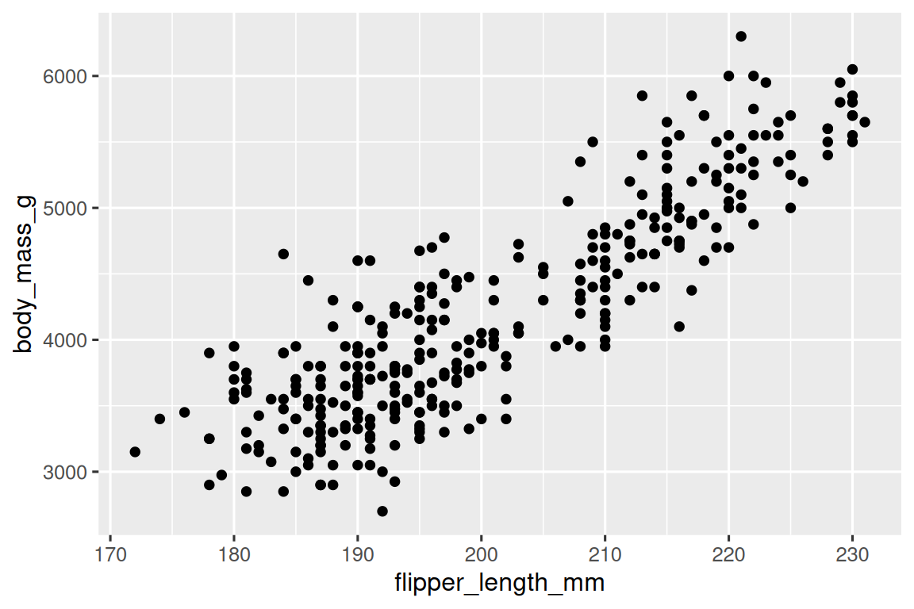
Maintenant nous avons quelque chose qui ressemble à ce que nous pourrions penser comme un « nuage de points ». Il ne correspond pas encore à notre graphique « objectif ultime », mais en utilisant ce graphique, nous pouvons commencer à répondre à la question qui a motivé notre exploration : « À quoi ressemble la relation entre la longueur de nageoire et la masse corporelle ? » La relation semble être positive (à mesure que la longueur de nageoire augmente, la masse corporelle aussi), assez linéaire (les points sont regroupés autour d’une ligne plutôt qu’une courbe) et modérément forte (il n’y a pas trop de dispersion autour d’une telle ligne). Les manchots avec des nageoires plus longues ont généralement une plus grande masse corporelle.
Avant d’ajouter d’autres couches à ce graphique, arrêtons-nous un moment et examinons le message d’avertissement que nous avons reçu :
Removed 2 rows containing missing values (
geom_point()).
Nous voyons ce message parce qu’il y a deux manchots dans notre jeu de données avec des valeurs manquantes de masse corporelle et/ou de longueur de nageoire, et ggplot2 n’a aucun moyen de les représenter sur le graphique sans ces deux valeurs. Comme R, ggplot2 souscrit à la philosophie selon laquelle les valeurs manquantes ne doivent jamais disparaître silencieusement. Ce type d’avertissement est probablement l’un des types d’avertissements les plus courants que vous verrez lorsque vous travaillez avec des données réelles – les valeurs manquantes sont un problème très courant et vous en apprendrez davantage tout au long du livre, particulièrement dans le Chapitre 18. Pour les graphiques restants de ce chapitre, nous supprimerons cet avertissement afin qu’il ne soit pas affiché à côté de chaque graphique que nous faisons.
1.2.4 Ajouter des esthétiques et des couches
Les nuages de points sont utiles pour afficher la relation entre deux variables numériques, mais il est toujours bon d’être sceptique face à toute relation apparente entre deux variables et de se demander s’il y a d’autres variables qui expliquent ou changent la nature de cette relation apparente. Par exemple, la relation entre la longueur de nageoire et la masse corporelle diffère-t-elle selon l’espèce ? Incorporons l’espèce dans notre graphique et voyons si cela révèle des informations supplémentaires sur la relation apparente entre ces variables. Nous ferons cela en représentant les espèces avec des points de couleurs différentes.
Pour y parvenir, devrons-nous modifier l’esthétique ou la geom ? Si vous avez deviné « dans le mappage esthétique, à l’intérieur de aes() », vous commencez déjà à acquérir le coup de main pour créer des visualisations de données avec ggplot2 ! Et sinon, ne vous inquiétez pas. Tout au long du livre, vous ferez beaucoup plus de ggplots et aurez beaucoup plus d’occasions de vérifier votre intuition en les faisant.
ggplot(
data = penguins,
mapping = aes(x = flipper_length_mm, y = body_mass_g, color = species)
) +
geom_point()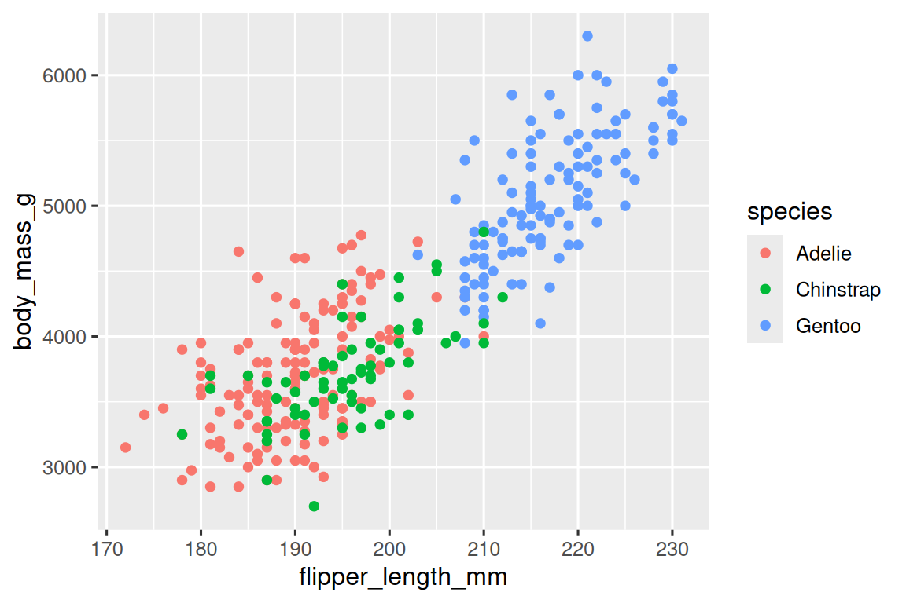
Quand une variable catégorique est mappée à une esthétique, ggplot2 assignera automatiquement une valeur unique de l’esthétique (ici une couleur unique) à chaque niveau unique de la variable (chacune des trois espèces), un processus connu sous le nom d’échelle. ggplot2 ajoutera également une légende qui explique quelles valeurs correspondent à quels niveaux.
Maintenant, ajoutons une autre couche : une courbe lisse affichant la relation entre la masse corporelle et la longueur de nageoire. Avant de procéder, reportez-vous au code ci-dessus et réfléchissez à comment nous pouvons l’ajouter à notre graphique existant.
Puisqu’il s’agit d’une nouvelle géométrie représentant nos données, nous ajouterons une nouvelle geom en tant que couche par-dessus notre geom de points : geom_smooth(). Et nous spécifierons que nous voulons tracer la droite de régression linéaire basée sur un modèle linéaire avec method = "lm" (linear model).
ggplot(
data = penguins,
mapping = aes(x = flipper_length_mm, y = body_mass_g, color = species)
) +
geom_point() +
geom_smooth(method = "lm")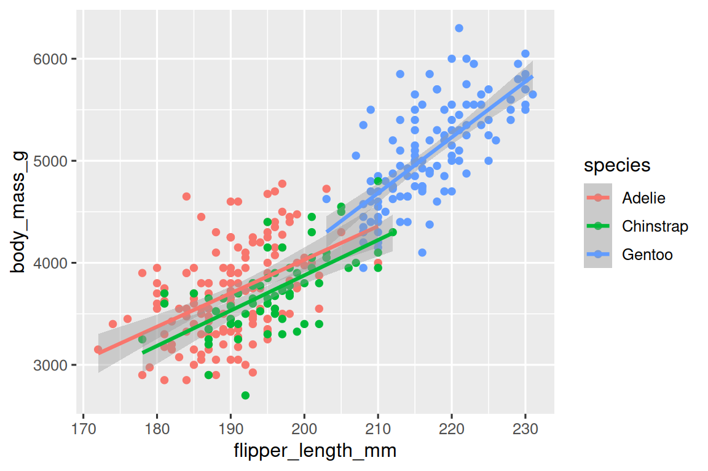
Nous avons ajouté avec succès des lignes, mais ce graphique ne ressemble pas au graphique de la Section 1.2.2, qui n’a qu’une seule ligne pour l’ensemble du jeu de données au lieu de lignes séparées pour chaque espèce de manchot.
Quand les mappages esthétiques sont définis dans ggplot(), au niveau global, ils sont transmis à chacune des couches geom suivantes du graphique. Cependant, chaque fonction geom dans ggplot2 peut également prendre un argument mapping, qui permet des mappages esthétiques au niveau local qui s’ajoutent à ceux hérités du niveau global. Puisque nous voulons que les points soient colorés en fonction de l’espèce mais que nous ne voulons pas que les lignes soient séparées pour elles, nous devrions spécifier color = species pour geom_point() seulement.
ggplot(
data = penguins,
mapping = aes(x = flipper_length_mm, y = body_mass_g)
) +
geom_point(mapping = aes(color = species)) +
geom_smooth(method = "lm")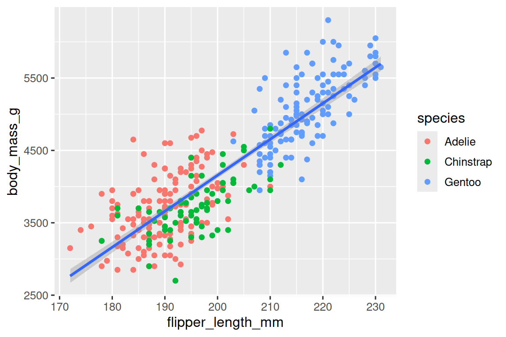
Voilà ! Nous avons quelque chose qui ressemble beaucoup plus à notre objectif ultime, bien qu’il ne soit pas encore parfait. Nous devons encore utiliser des formes différentes pour chaque espèce de manchots et améliorer les étiquettes.
C’est généralement une mauvaise idée de représenter des informations en utilisant uniquement des couleurs sur un graphique, car les gens perçoivent les couleurs différemment en raison du daltonisme ou d’autres différences de vision des couleurs. Par conséquent, en plus de la couleur, nous pouvons également mapper species à l’esthétique shape (pour la forme).
ggplot(
data = penguins,
mapping = aes(x = flipper_length_mm, y = body_mass_g)
) +
geom_point(mapping = aes(color = species, shape = species)) +
geom_smooth(method = "lm")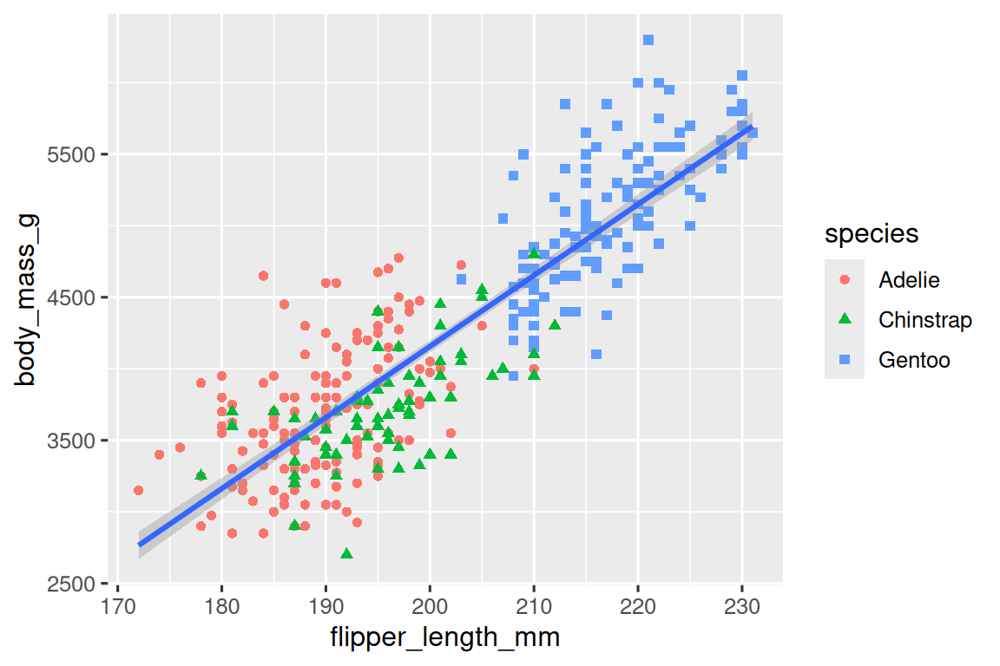
Notez que la légende est automatiquement mise à jour pour refléter les différentes formes des points également.
Et enfin, nous pouvons améliorer les étiquettes (noms) de notre graphique en utilisant la fonction labs() dans une nouvelle couche. Certains arguments de labs() sont explicites : title ajoute un titre et subtitle ajoute un sous-titre au graphique. D’autres arguments correspondent aux mappages esthétiques, x est l’étiquette de l’axe des x, y est l’étiquette de l’axe des y, et color et shape définissent l’étiquette de la légende. De plus, nous pouvons améliorer la palette de couleurs pour qu’elle soit sûre pour les daltoniens avec la fonction scale_color_colorblind() du package ggthemes.
ggplot(
data = penguins,
mapping = aes(x = flipper_length_mm, y = body_mass_g)
) +
geom_point(aes(color = species, shape = species)) +
geom_smooth(method = "lm") +
labs(
title = "Masse corporelle et longueur des nageoires",
subtitle = "Dimensions des manchots Adélie, à jugulaire et papous",
x = "Longueur des nageoires (mm)", y = "Masse corporelle (g)",
color = "Espèce", shape = "Espèce"
) +
scale_color_colorblind()![Un nuage de points de la masse corporelle par rapport à la longueur de nageoire des manchots, avec une droite de régression linéaire affichant la relation entre ces deux variables superposée. Le graphique affiche une relation positive, assez linéaire et relativement forte entre ces deux variables. Les espèces (Adelie, Chinstrap et Gentoo) sont représentées par des couleurs et des formes différentes. La relation entre la masse corporelle et la longueur de nageoire est à peu près la même pour ces trois espèces, et les manchots Gentoo sont plus grands que les manchots des deux autres espèces.](data-visualize_files/figure-html/unnamed-chunk-14-1.png)
Nous avons enfin un graphique qui correspond parfaitement à notre « objectif ultime » !
1.2.5 Exercices
Combien de lignes y a-t-il dans
penguins? Combien de colonnes ?Qu’est-ce que la variable
bill_depth_mmdans le data framepenguinsdécrit ? Lisez l’aide pour?penguinspour le découvrir.Faites un nuage de points de
bill_depth_mmvsbill_length_mm. C’est-à-dire, faites un nuage de points avecbill_depth_mmsur l’axe des y etbill_length_mmsur l’axe des x. Décrivez la relation entre ces deux variables.Que se passe-t-il si vous faites un nuage de points de
speciesvsbill_depth_mm? Quel choix de geom serait plus adapté ?-
Pourquoi ceci génère-t-il une erreur et comment la corrigeriez-vous ?
ggplot(data = penguins) + geom_point() Que fait l’argument
na.rmdansgeom_point()? Quelle est la valeur par défaut de l’argument ? Créez un nuage de points où vous utilisez avec succès cet argument défini surTRUE.Ajoutez la légende suivante au graphique que vous avez créé dans l’exercice précédent : « Les données proviennent du package palmerpenguins. » Conseil : Jetez un œil à la documentation de
labs().-
Recréez la visualisation suivante. Avec quelle esthétique
bill_depth_mmdevrait-elle être mappée ? Et devrait-elle être mappée au niveau global ou au niveau geom ?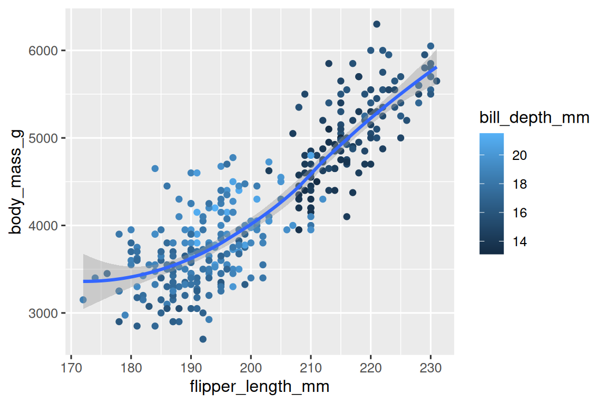
-
Exécutez ce code dans votre tête et prédisez à quoi ressemblera la sortie. Puis, exécutez le code dans R et vérifiez vos prédictions.
ggplot( data = penguins, mapping = aes(x = flipper_length_mm, y = body_mass_g, color = island) ) + geom_point() + geom_smooth(se = FALSE) -
Ces deux graphiques seront-ils différents ? Pourquoi ou pourquoi pas ?
ggplot( data = penguins, mapping = aes(x = flipper_length_mm, y = body_mass_g) ) + geom_point() + geom_smooth() ggplot() + geom_point( data = penguins, mapping = aes(x = flipper_length_mm, y = body_mass_g) ) + geom_smooth( data = penguins, mapping = aes(x = flipper_length_mm, y = body_mass_g) )
1.3 Appels ggplot2
Au fur et à mesure que nous nous éloignons de ces sections introductives, nous passerons à une expression plus concise du code ggplot2. Jusqu’à présent, nous avons été très explicites, ce qui est utile quand vous apprenez :
ggplot(
data = penguins,
mapping = aes(x = flipper_length_mm, y = body_mass_g)
) +
geom_point()Généralement, les premier et deuxième arguments d’une fonction sont si importants que vous devriez les connaître par cœur. Les deux premiers arguments de ggplot() sont data et mapping, dans le reste du livre, nous ne fournirons pas ces noms. Cela économise la dactylographie et, en réduisant la quantité de texte supplémentaire, facilite la comparaison entre les graphiques. C’est une préoccupation de programmation vraiment importante sur laquelle nous reviendrons dans le Chapitre 25.
La réécriture du graphique précédent de manière plus concise donne :
ggplot(penguins, aes(x = flipper_length_mm, y = body_mass_g)) +
geom_point()À l’avenir, vous apprendrez également à connaître le pipe, |>, qui vous permettra de créer ce graphique avec :
penguins |>
ggplot(aes(x = flipper_length_mm, y = body_mass_g)) +
geom_point()1.4 Visualiser les distributions
La manière dont vous visualisez la distribution d’une variable dépend du type de variable : catégorique ou numérique.
1.4.1 Une variable catégorique
Une variable est catégorique si elle ne peut prendre qu’une seule d’un petit ensemble de valeurs. Pour examiner la distribution d’une variable catégorique, vous pouvez utiliser un diagramme en barres. La hauteur des barres affiche le nombre d’observations qui se sont produites avec chaque valeur x.
Dans les diagrammes en barres de variables catégoriques avec des niveaux non ordonnés, comme species (espèce de manchot) ci-dessus, il est souvent préférable de réorganiser les barres en fonction de leurs fréquences. Pour ce faire, vous devez transformer la variable en facteur (manière dont R traite les données catégoriques) et puis réorganiser les niveaux de ce facteur.
ggplot(penguins, aes(x = fct_infreq(species))) +
geom_bar()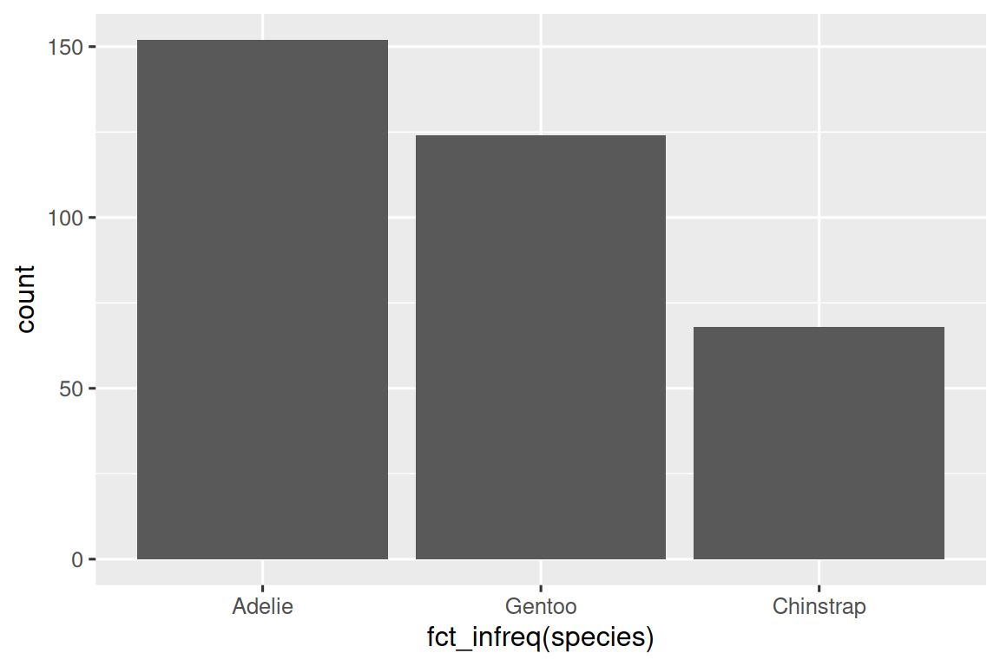
Vous apprendrez davantage sur les facteurs et les fonctions pour traiter les facteurs (comme fct_infreq() indiqué ci-dessus) dans le Chapitre 16.
1.4.2 Une variable numérique
Une variable est numérique (ou quantitative) si elle peut prendre une multitude de valeurs numériques, et s’il est possible d’ajouter, soustraire ou faire la moyenne avec ces valeurs. Les variables numériques peuvent être continues ou discrètes.
Une visualisation couramment utilisée pour les distributions de variables continues est un histogramme.
ggplot(penguins, aes(x = body_mass_g)) +
geom_histogram(binwidth = 200)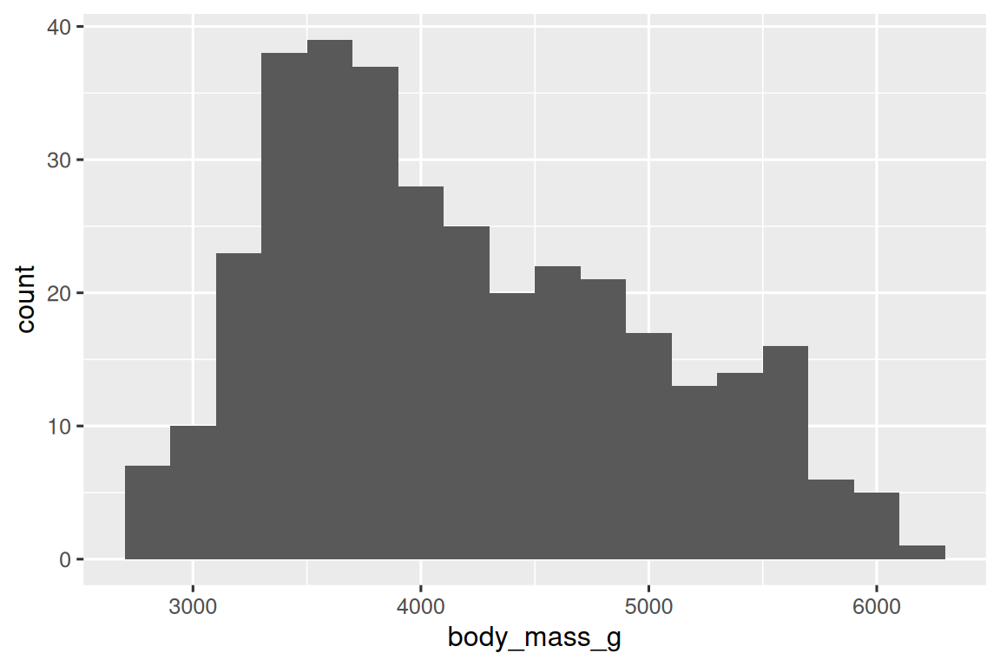
Un histogramme divise l’axe des x en classes (bins) équidistantes, puis utilise la hauteur d’une barre pour afficher le nombre d’observations qui tombent dans chaque classe. Dans le graphique ci-dessus, la barre la plus haute montre que 39 observations ont une valeur body_mass_g entre 3 500 et 3 700 grammes, qui sont les bords gauche et droit de la barre.
Vous pouvez définir la largeur des intervalles (classes) dans un histogramme avec l’argument binwidth, qui est mesuré dans les unités de la variable x. Vous devriez toujours explorer une variété de binwidths lors du travail avec des histogrammes, car différents binwidths peuvent révéler différents motifs. Dans les graphiques ci-dessous, un binwidth de 20 est trop étroit ; ça montre trop de barres et rend difficile la détermination de la forme de la distribution. De même, un binwidth de 2 000 est trop élevé ; ça montre toutes les données en seulement trois barres et rend également difficile la détermination de la forme de la distribution. Un binwidth de 200 offre un équilibre judicieux.
ggplot(penguins, aes(x = body_mass_g)) +
geom_histogram(binwidth = 20)
ggplot(penguins, aes(x = body_mass_g)) +
geom_histogram(binwidth = 2000)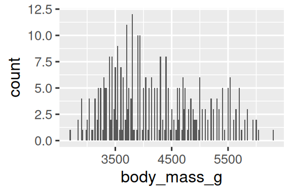
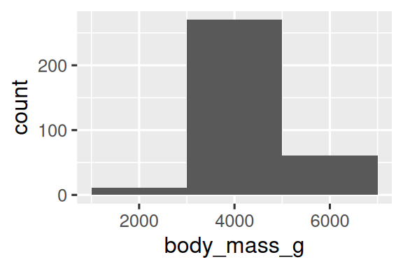
Une visualisation alternative pour les distributions de variables numériques est une courbe de densité. Une courbe de densité est une version lissée d’un histogramme et une alternative pratique, particulièrement pour les données continues qui proviennent d’une distribution lisse sous-jacente. Nous n’allons pas nous attarder sur la façon dont geom_density() estime la densité (vous pouvez en lire plus dans la documentation de la fonction), mais expliquons comment la courbe de densité est dessinée avec une analogie. Imaginez un histogramme fait de blocs de bois. Ensuite, imaginez que vous laissiez tomber une longue spaghetti cuite sur celui-ci. La forme que la spaghetti prendra une fois disposée sur les blocs peut être pensée comme la forme de la courbe de densité. Elle montre moins de détails qu’un histogramme mais permet de saisir rapidement la forme de la distribution, particulièrement en ce qui concerne les modes et l’asymétrie.
ggplot(penguins, aes(x = body_mass_g)) +
geom_density()
#> Warning: Removed 2 rows containing non-finite outside the scale range
#> (`stat_density()`).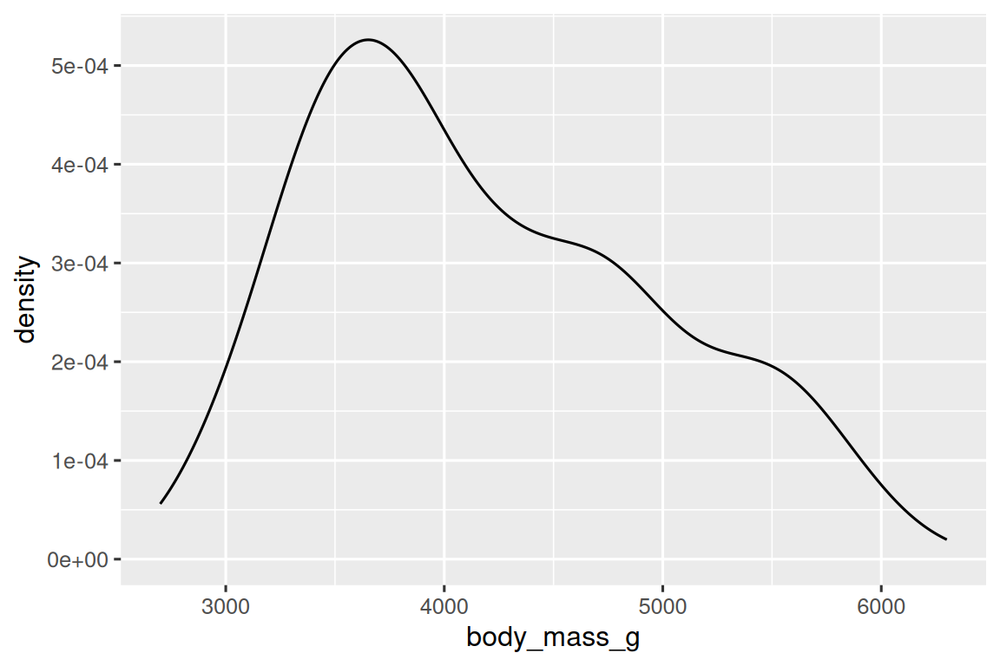
1.4.3 Exercices
Faites un diagramme en barres de
speciesdepenguins, où vous assignezspeciesà l’esthétiquey. En quoi ce graphique est-il différent ?-
En quoi les deux graphiques suivants sont-ils différents ? Quelle esthétique,
coloroufill, est plus utile pour modifier la couleur des barres ? Que fait l’argument
binsdansgeom_histogram()?Faites un histogramme de la variable
caratdans le jeu de donnéesdiamondsqui est disponible quand vous chargez le package tidyverse. Expérimentez avec différents binwidths. Quel binwidth révèle les motifs les plus intéressants ?
1.5 Visualiser les relations
Pour visualiser une relation, nous avons besoin d’au moins deux variables mappées aux esthétiques d’un graphique. Dans les sections suivantes, vous apprendrez les graphiques couramment utilisés pour visualiser les relations entre deux variables ou plus et les geoms utilisés pour les créer.
1.5.1 Une variable numérique et une variable catégorique
Pour visualiser la relation entre une variable numérique et une variable catégorique, nous pouvons utiliser des boîtes à moustaches côte à côte. Une boîte à moustaches (boxplot) est un type de raccourci visuel pour les mesures de position (percentiles) qui décrivent une distribution. Elle est également utile pour identifier les valeurs aberrantes (outilers) potentielles. Comme indiqué dans la Figure 1.1, chaque boîte à moustaches se compose de :
Une boîte qui indique l’étendue de la moitié médiane des données, une distance connue sous le nom d’écart interquartile (IQR, interquartile range), s’étendant du 25e percentile de la distribution au 75e percentile. Au milieu de la boîte se trouve une ligne qui affiche la médiane, c’est-à-dire le 50e percentile de la distribution. Ces trois lignes vous donnent un sens de l’étendue de la distribution et si la distribution est symétrique par rapport à la médiane ou asymétrique d’un côté.
Des points visuels qui affichent les observations qui se situent à plus de 1,5 fois l’écart interquartile de chaque bord de la boîte. Ces valeurs aberrantes sont inhabituelles et sont donc tracées individuellement.
Une ligne (ou moustache) qui s’étend de chaque bout de la boîte et va jusqu’à la valeur non-aberrante la plus éloignée dans la distribution.

Jetons un œil à la distribution de la masse corporelle par espèce en utilisant geom_boxplot() :
ggplot(penguins, aes(x = species, y = body_mass_g)) +
geom_boxplot()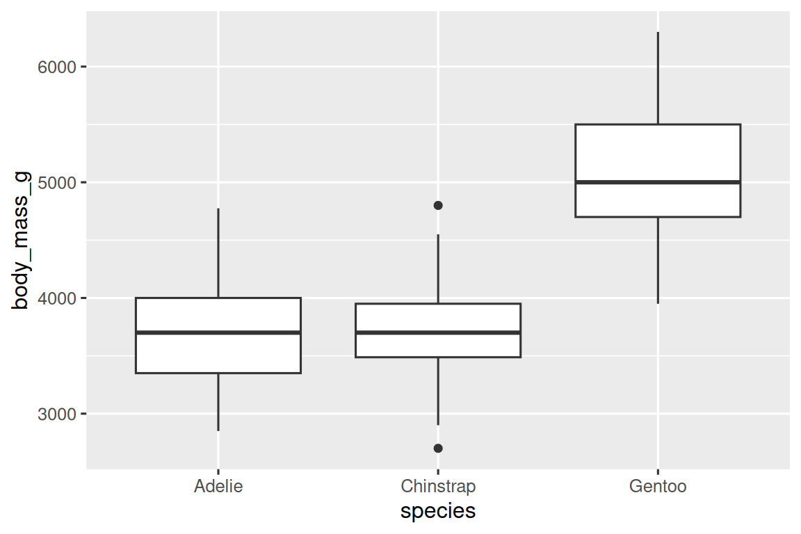
Alternativement, nous pouvons faire des courbes de densité avec geom_density().
ggplot(penguins, aes(x = body_mass_g, color = species)) +
geom_density(linewidth = 0.75)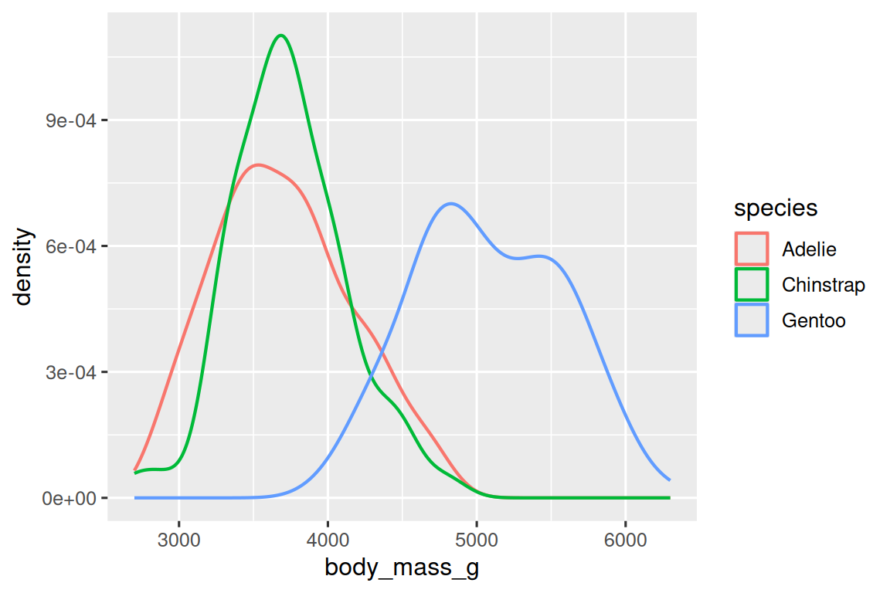
Nous avons également personnalisé l’épaisseur des lignes en utilisant l’argument linewidth afin de les faire ressortir un peu plus par rapport au fond.
De plus, nous pouvons mapper species aux esthétiques color et fill et utiliser l’esthétique alpha pour ajouter de la transparence aux courbes de densité remplies. Cette esthétique prend des valeurs entre 0 (complètement transparent) et 1 (complètement opaque). Dans le graphique suivant, elle est définie sur 0.5.
ggplot(penguins, aes(x = body_mass_g, color = species, fill = species)) +
geom_density(alpha = 0.5)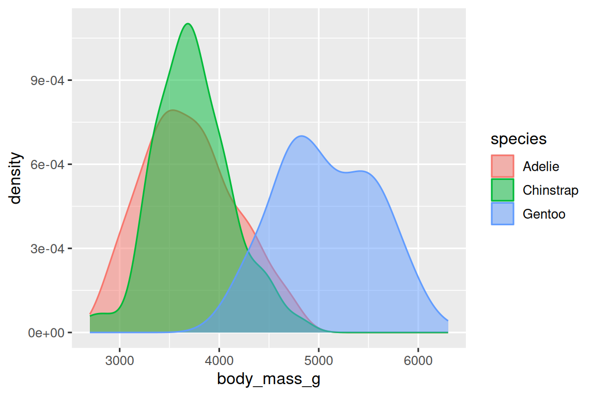
Notez la terminologie que nous avons utilisée ici :
- Nous mappons des variables à des esthétiques si nous voulons que l’attribut visuel représenté par cette esthétique varie en fonction des valeurs de cette variable.
- Sinon, nous définissons la valeur d’une esthétique.
1.5.2 Deux variables catégoriques
Nous pouvons utiliser des diagrammes en barres empilés pour visualiser la relation entre deux variables catégoriques. Par exemple, les deux diagrammes en barres empilés suivants affichent tous les deux la relation entre island et species, ou, plus précisément, visualisent la distribution de species au sein de chaque île.
Le premier graphique montre les fréquences de chaque espèce de manchots sur chaque île. Le graphique des fréquences montre qu’il y a des nombres égaux d’Adelies sur chaque île. Mais nous n’avons pas une bonne idée de l’équilibre des pourcentages au sein de chaque île.
Le deuxième graphique, un graphique de fréquences relatives créé en fixant position = "fill" dans le geom, est plus utile pour comparer les distributions d’espèces entre les îles car il n’est pas affecté par les nombres inégaux de manchots entre les îles. En utilisant ce graphique, nous pouvons voir que les manchots Gentoo vivent tous sur l’île Biscoe et constituent environ 75 % des manchots de cette île, les Chinstrap vivent tous sur l’île Dream et constituent environ 50 % des manchots de cette île, et les Adelie vivent sur les trois îles et constituent tous les manchots sur Torgersen.
En créant ces diagrammes en barres, nous mappons la variable qui sera séparée en barres à l’esthétique x, et la variable qui changera les couleurs à l’intérieur des barres à l’esthétique fill. Malheureusement, ggplot2 nomme l’axe y avec « count » par défaut, mais nous pouvons le contourner en ajoutant une couche labs() où nous spécifions le nom de l’axe y comme « proportion ».
1.5.3 Deux variables numériques
Jusqu’à présent, vous avez appris à connaître les nuages de points (créés avec geom_point()) et les courbes lisses (créées avec geom_smooth()) pour visualiser la relation entre deux variables numériques. Un nuage de points est probablement le graphique le plus couramment utilisé pour visualiser la relation entre deux variables numériques.
ggplot(penguins, aes(x = flipper_length_mm, y = body_mass_g)) +
geom_point()
1.5.4 Trois variables ou plus
Comme nous l’avons vu dans la Section 1.2.4, nous pouvons incorporer plus de variables dans un graphique en les mappant à des esthétiques supplémentaires. Par exemple, dans le nuage de points suivant, les couleurs des points représentent l’espèce et les formes des points représentent les îles.
ggplot(penguins, aes(x = flipper_length_mm, y = body_mass_g)) +
geom_point(aes(color = species, shape = island))
Cependant, trop de mappages esthétiques ajoutés à un graphique l’encombrent et le rendent difficile à comprendre. Un autre moyen, particulièrement utile pour les variables catégoriques, est de diviser votre graphique en facettes ; des sous-graphiques qui affichent chacun un sous-ensemble des données.
Pour créer des facettes de votre graphique à partir d’une seule variable, utilisez facet_wrap(). Le premier argument de facet_wrap() est une formule3, que vous créez avec ~ suivi d’un nom de variable. La variable que vous mettez dans facet_wrap() doit être catégorique.
ggplot(penguins, aes(x = flipper_length_mm, y = body_mass_g)) +
geom_point(aes(color = species, shape = species)) +
facet_wrap(~island)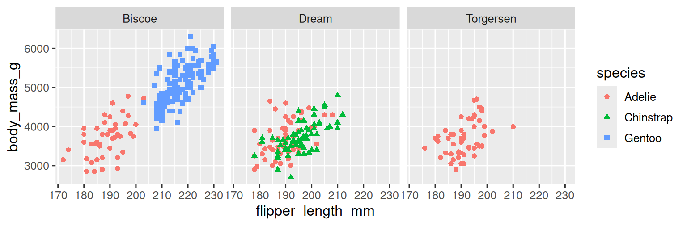
Vous apprendrez à connaître beaucoup d’autres geoms pour visualiser les distributions de variables et les relations entre elles dans le Chapitre 9.
1.5.5 Exercices
Le data frame
mpgfourni avec le package ggplot2 contient 234 observations collectées par l’Agence américaine de protection de l’environnement sur 38 modèles de voitures. Quelles variables dansmpgsont catégoriques ? Quelles variables sont numériques ? (Conseil : Tapez?mpgpour lire la documentation du jeu de données.) Comment pouvez-vous voir ces informations quand vous exécutezmpg?Faites un nuage de points de
hwyvsdisplen utilisant le data framempg. Ensuite, mappez une troisième variable numérique àcolor, puissize, puiscoloretsize, puisshape. Comment ces esthétiques se comportent-elles différemment pour les variables catégoriques vs numériques ?Dans le nuage de points de
hwyvsdispl, que se passe-t-il si vous mappez une troisième variable àlinewidth?Que se passe-t-il si vous mappez la même variable à plusieurs esthétiques ?
Faites un nuage de points de
bill_depth_mmvsbill_length_mmet colorez les points parspecies. Qu’est-ce que l’ajout de coloration par l’espèce révèle sur la relation entre ces deux variables ? Et que se passe-t-il si vous créez des facettes parspecies?-
Pourquoi ce qui suit génère-t-il deux légendes séparées ? Comment corrigeriez-vous cela pour combiner les deux légendes ?
ggplot( data = penguins, mapping = aes( x = bill_length_mm, y = bill_depth_mm, color = species, shape = species ) ) + geom_point() + labs(color = "Species") -
Créez les deux diagrammes en barres empilés suivants. À quelle question pouvez-vous répondre avec le premier ? À quelle question pouvez-vous répondre avec le second ?
1.6 Exporter vos graphiques
Une fois que vous avez créé un graphique, vous voudrez peut-être le sortir de R en l’exportant sous forme d’une image que vous pourrez utiliser ailleurs. C’est ce que fait ggsave(), qui enregistrera le graphique le plus récemment créé sur le disque :
ggplot(penguins, aes(x = flipper_length_mm, y = body_mass_g)) +
geom_point()
ggsave(filename = "penguin-plot.png")Cela exportera votre graphique dans votre répertoire de travail, un concept sur lequel vous apprendrez davantage dans le Chapitre 6.
Si vous ne spécifiez pas width (largeur) et height (hauteur), ils seront pris des dimensions du périphérique de graphique actuel. Pour avoir un code reproductible, vous devrez les spécifier. Vous pouvez en apprendre davantage sur ggsave() dans la documentation.
En général, cependant, nous vous recommandons de rédiger vos rapports finaux à l’aide de Quarto, un système de rédaction reproductible qui vous permet d’entrelacer votre code et votre prose et d’inclure automatiquement vos graphiques dans vos documents. Vous apprendrez davantage sur Quarto dans le Chapitre 28.
1.6.1 Exercices
-
Exécutez les lignes de code suivantes. Lequel des deux graphiques est exporté en tant que
mpg-plot.png? Pourquoi ? Que devez-vous changer dans le code ci-dessus pour exporter le graphique en tant que PDF au lieu d’un PNG ? Comment pourriez-vous découvrir quels types de fichiers image sont supportés par
ggsave()?
1.7 Problèmes courants
Au fur et à mesure que vous commencez à exécuter du code R, vous êtes susceptible de rencontrer des problèmes. Ne vous inquiétez pas — cela arrive à tout le monde. Nous avons tous écrit du code R pendant des années, mais chaque jour, nous écrivons toujours du code qui ne fonctionne pas du premier coup !
Commencez par comparer soigneusement le code que vous exécutez avec le code du livre. R est extrêmement pointilleux, et un caractère mal placé peut faire toute la différence. Assurez-vous que chaque ( est appairé avec un ) et chaque " est appairé avec un autre ". Parfois, vous exécutez le code et rien ne se passe. Vérifiez le côté gauche de votre console : si c’est un +, cela signifie que R ne pense pas que vous ayez écrit une expression complète et il attend que vous la terminiez. Dans ce cas, il est généralement facile de recommencer à zéro en appuyant sur ÉCHAP pour abandonner le traitement de la commande actuelle.
Un problème courant lors de la création de graphiques ggplot2 est de mettre le + au mauvais endroit : il doit venir à la fin de la ligne, pas au début. En d’autres termes, assurez-vous que vous n’avez pas accidentellement écrit du code comme ceci :
ggplot(data = mpg)
+ geom_point(mapping = aes(x = displ, y = hwy))Si vous êtes toujours bloqué, essayez l’aide. Vous pouvez obtenir de l’aide sur n’importe quelle fonction R en exécutant ?function_name dans la console, ou en surbrillant le nom de la fonction et en appuyant sur F1 dans RStudio. Ne vous inquiétez pas si l’aide ne semble pas si utile - à la place, allez directement aux exemples en bas de page et cherchez du code qui correspond à ce que vous essayez de faire.
Si cela n’aide pas, lisez attentivement le message d’erreur. Parfois, la réponse sera entérrée là ! Mais quand vous êtes nouveau en R, même si la réponse est dans le message d’erreur, vous ne saurez peut-être pas encore comment la comprendre. Un autre outil formidable est Google : essayez de googler le message d’erreur, car il est probable que quelqu’un d’autre ait eu le même problème et ait obtenu de l’aide en ligne.
1.8 Résumé
Dans ce chapitre, vous avez appris les bases de la visualisation de données avec ggplot2. Nous avons commencé par l’idée fondamentale qui est la base de ggplot2 : une visualisation est un mappage des variables de vos données aux propriétés esthétiques comme la position, la couleur, la taille et la forme. Vous avez ensuite appris à augmenter la complexité et améliorer la présentation de vos graphiques couche par couche. Vous avez également vus les graphiques couramment utilisés pour visualiser la distribution d’une variable unique ainsi que pour visualiser les relations entre deux variables ou plus, en tirant parti des mappages esthétiques supplémentaires et/ou en divisant votre graphique en petits multiples en utilisant les facettes.
Nous utiliserons de nouveau les visualisations tout au long de ce livre, en introduisant de nouvelles techniques quand nous en aurons besoin et en approfondissant la création de visualisations avec ggplot2 du Chapitre 9 jusqu’au Chapitre 11.
Avec les bases de la visualisation acquises, dans le chapitre suivant, nous allons changer un peu de direction et vous donner des conseils pratiques sur le flux de travail (workflow). Nous entrelacerons des conseils de flux de travail avec les outils de la science de données tout au long de cette partie du livre car cela vous aidera à rester organisé à mesure que vous écrirez des quantités croissantes de code R.
Vous pouvez éliminer ce message et forcer la résolution des conflits à la demande en utilisant le package conflicted, qui devient plus important à mesure que vous chargez plus de packages. Vous pouvez en savoir plus sur conflicted à https://conflicted.r-lib.org.↩︎
Horst AM, Hill AP, Gorman KB (2020). palmerpenguins: Palmer Archipelago (Antarctica) penguin data. R package version 0.1.0. https://allisonhorst.github.io/palmerpenguins/. doi: 10.5281/zenodo.3960218.↩︎
Ici « formule » est le nom de la chose créée par
~, pas un synonyme pour « équation ».↩︎